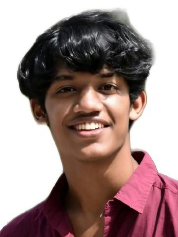

Next stop: your team.
Open to AI and LLM engineering roles, and always glad to talk about agentic systems.
AI Engineer building multi-agent systems and production LLM workflows, from agent design to deployment.
Swipe the map sideways. The full station list is further down.
I work across three products at Tipstat. On Alvoff, an AI B2B sourcing and procurement platform, I lead all AI development and co-own the backend in a two-engineer team. I also assisted on HeyVision, an AI email assistant, and Ozyn AI, a multi-agent personal assistant. Alvoff highlights:
LangGraph, LangChain, MCP (FastMCP), RAG, multi-agent orchestration, Mem0, Langfuse, model tiering and fallbacks
PyTorch, TensorFlow, QLoRA / LoRA fine-tuning, MLX, Ollama, Whisper, OpenCLIP, ViT, DQN family
Python, Go, FastAPI, PostgreSQL, Redis, Qdrant, RabbitMQ, Docker, GitHub Actions, Harbor, Hetzner, AWS
Crawl4AI, SearXNG, Lightpanda, Elasticsearch, MongoDB, Pandas, PySpark, MLflow, Airflow
Daily Claude Code and Codex user, with context-engineered, token-optimized agentic workflows
Open to AI and LLM engineering roles, and always glad to talk about agentic systems.
